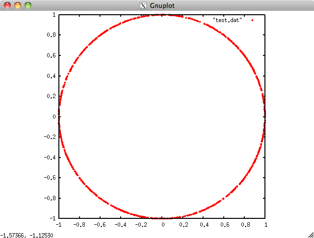

乱数クラスについて
KVSには乱数生成のためのクラスとして
一様乱数：MersenneTwister
正規乱数：BoxMuller
の2つの乱数のクラスがあります．
これらの乱数クラスには，乱数値を戻り値にするほか，種を設定したり，分布を変更したりすることができます．
ここでは，乱数クラスのもつメソッドについて説明したあと，円周率をモンテカルロ法で求めるプログラムを作成します．
同時に平均と標準偏差も求めてみましょう．
乱数クラスのメソッド
乱数クラスには，乱数値を戻り値にするほか，種を設定したり，分布を変更したりすることができます．
詳しくはソースコード
(KVSのソースをダウンロードしたディレクトリ) kvs-src/Source/Core/Numeric/MersenneTwister.h
(KVSのソースをダウンロードしたディレクトリ) kvs-src/Source/Core/Numeric/BoxMuller.h
を見てみて下さい．ここでは，各メソッドについて使い方を説明します．
コンストラクタ
乱数のコンストラクタとしては，次の2種類が用意されています．
// 引数なし
kvs::MersenneTwister uniRand; // 一様乱数
kvs::BoxMuller normRand; // 正規乱数
// 乱数シードを設定する
kvs::MersenneTwister uniRand2( 261422 ); // 一様乱数
kvs::BoxMuller normRand2( 261422 ); // 正規乱数
乱数を生成する
乱数を生成するためには operator () を用います．
KVSでは標準で
- 一様乱数 ： [0, 1] の区間の一様乱数
- 正規乱数 ： N(0, 1 ) の正規分布をもつ正規乱数
を生成します．
std::cout << "[0, 1] : 一様乱数 " << uniRand() << std::endl;
std::cout << "N(0, 1) : 正規乱数 " << normRand() << std::endl;
std::cout << "[0, 1] : 一様乱数 " << uniRand2() << std::endl;
std::cout << "N(0, 1) : 正規乱数 " << normRand2() << std::endl;
乱数の分布を変更する
一様乱数で区間 [0, n] となるように値を返すには：
rand( const double n )
正規分布の N( mu, sigma2 ) に従った乱数の値を返すには：
rand( const double mu, const double sigma2 )
aただし，mu; 平均，sigma2 ：分散
とします．
// 乱数の分布を変更する
std::cout << "[0, 100] : 一様乱数 " << uniRand.rand( 100 ) << std::endl;
std::cout << "N(2, 10) : 正規乱数 " << normRand.rand(2, 10) << std::endl;
例 モンテカルロ法を使って円周率を求める
モンテカルロ法で面積を求めるには，紙の上に適当な図形を描いて紙の上に均等に砂粒をばらまき，砂粒が図形内に入った割合を紙全体の面積にかけます．これによりおおよその面積を求めることができます．
ここでは(半径１の円面積)/4 をモンテカルロ法で求めた後に4をかけて円周率を求めています．
円周率を求めるためには，[0, 1]×[0, 1]の矩形内に乱数を生成し，その中からx2 + y2 < 1 内に入る点を数えます．
1. 作業ディレクトリの作成
作業ディレクトリに「CreateRandom」というディレクトリを作成して，移動して下さい．
$ mkdir CreateRandom
$ cd CreateRandom
2. main.ccp の作成
「main.cpp」というファイルを作成して下さい．
一様乱数を生成するために，kvs::MersenneTwister クラスのインスタンスを生成します．
また，ここでは試行回数を1000回とします．
int main( void )
{
kvs::MersenneTwister uniRand; // 一様乱数
kvs::BoxMuller normRand; // 正規乱数
// 乱数の試行回数
const int trialNum = 1000;
return ( 0 );
}
3. 初期値の設定
x2 + y2 < 1 内に入る点の数を数えるための変数，および，平均と標準偏差を計算するための変数に0を代入します．
// 円内に発生した点の数を数える
int num = 0;
// 平均と標準偏差を求めるための初期値
double uniAve = 0.0, uniDp = 0.0;
4. 数を数える
点（x, y) として[0, 1] の乱数をそれぞれ生成し，x2 + y2 < 1 内に入る点の数を数える．
さらに，平均と標準偏差を求めるために和と２乗和を計算する．
for( int i=0; i<trialNum; i++ ) {
// [0, 1] 内で乱数を生成
double x = uniRand();
double y = uniRand();
// x*x + y*y < 1 内に生成された点の数を数える
if( ( x*x + y*y ) < 1.0 )
num++;
// 和と2乗和を計算
uniAve += x;
uniDp += ( x * x );
}
5. 円周率を求める
生成した総数に対して x2 + y2 < 1 内に入った数の割合を調べて円周率を求める．
また，平均と標準偏差を求める（[0,1] の一様乱数の標準偏差は1/12 になることを確認してみよう）．
// 円周率を求める
double pi = (double)num/(double)trialNum * 4.0;
std::cout << num << " " << trialNum << std::endl;
std::cout << "円周率 : " << pi << std::endl;
// 平均と標準偏差を求める
uniAve /= (double)trialNum;
uniDp = uniDp/(double)trialNum - uniAve*uniAve;
std::cout << "-- 一様乱数 -- " << std::endl;
std::cout << "平均 : " << uniAve << " 標準偏差 : " << uniDp << std::endl;
6. ヘッダファイル
ここで使用したKVSクラスをインクルードします．ここでは，
- kvs::MersenneTwister
- kvs::BoxMuller
を使用しました．
#include <kvs/MersenneTwister>
#include <kvs/BoxMuller>
7. まとめ
以上をまとめたプログラムはこちら： CreateRandom.tgz
8. コンパイルと実行
作成したプログラムをコンパイル，実行してみましょう．
KVSプログラムをコンパイルするためにはkvsmakeコマンドを用いてMakefileを作成すると簡単にコンパイルを行うことができます．
$ kvsmake -G <-- Makefile の作成
$ kvsmake <-- コンパイル
エラーなくコンパイルできたら，実行してみましょう．
以下のような実行結果が得られると思います．
$ ./CreateRandom <-- Windows環境ではCreateRandom.exe となります
[0, 1] : 一様乱数 0.352003
N(0, 1) : 正規乱数 0.24365
[0, 1] : 一様乱数 0.606438
N(0, 1) : 正規乱数 -0.447015
[0, 100] : 一様乱数 66.4808
N(2, 10) : 正規乱数 -8.92791
円周率 : 3.08
-- 一様乱数 --
平均 : 0.482417 標準偏差 : 0.0840314
以上のように，KVSでは乱数列を扱うことができます．
問題 円上にランダムに点を生成し，plot してみよう
円上にランダムに点群を生成して，ファイルに出力し，その結果をGnuplot を使って可視化してみましょう．
円上に点を生成するためには媒介変数表示を使って
x = r cos( θ )
y = r sin( θ )
（ただし，r は半径）
x, y 座標を決定します．
Gnuplot のインストール
1) Gnuplotのインストール
gnuplot のWebページ：http://www.gnuplot.info/
からダウンロードします．
Macの場合は，同Webページの
「 contributed executables for OSX」
からgnuplot-5.0.5-quartz.pkgファイルをダウンロードします．
（2017年4月21日現在）
ダブルクリックしてインストールすれば，アプリケーションフォルダに「gnuplot」がインストールされます．
2) 結果の確認
ファイルに出力した点群をgnuplot で表示するには，gnuplot 上で
> set size square <-- 表示画面を正方形にする
> plot "test.dat" with points pointtype 7 <-- ファイルから点群を読み込み●で描画
この結果は以下の通り．

Gnuplot による点群描画結果
Updated at July 4, 2014
at April 21, 2017